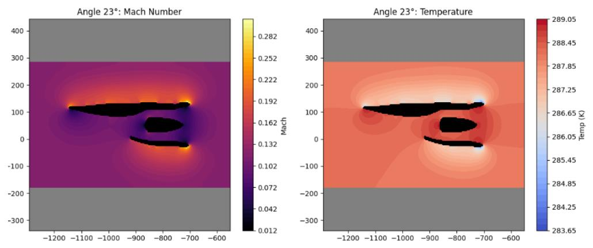
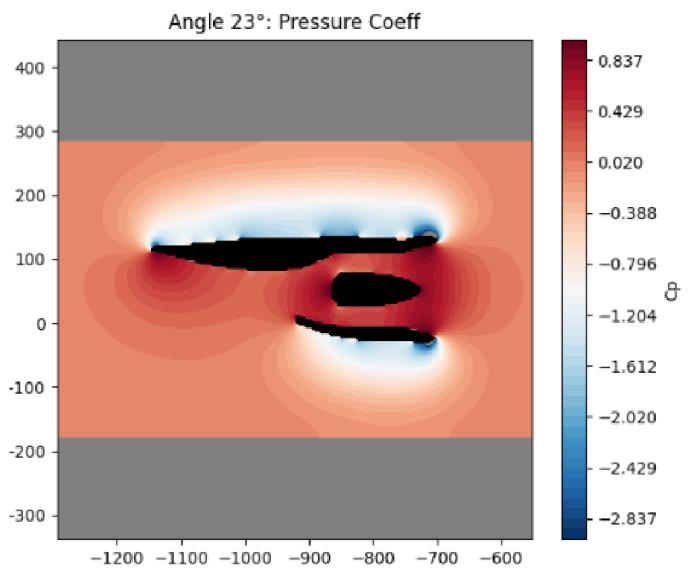
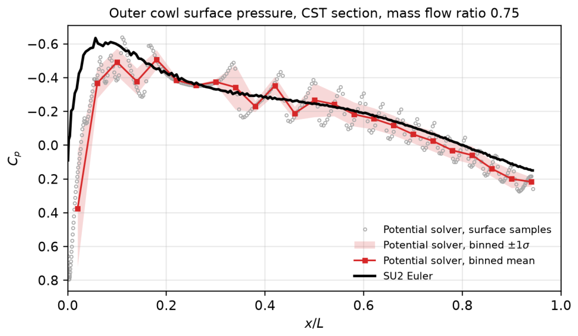
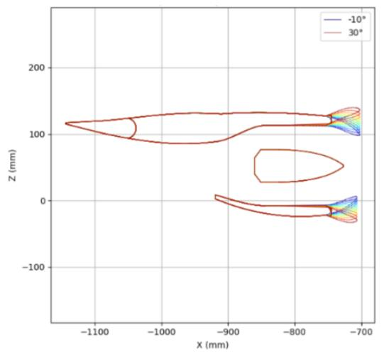

Why the nacelle matters
The nacelle geometry sets the capture area, the mass flow into the engine, and a large part of the external drag, and it changes with the propulsion layout, whether the fans sit in a circulation control wing, a distributed blown wing, or a conventional pod. Evaluating all of that well usually means expensive Navier Stokes solves, which makes design iteration slow.
The plot above is the heart of the study, total drag coefficient and mass flow rate traced against the lip flare angle, which is exactly the trade the designer has to balance.
The flow field around the lip
The integrated solver resolves the compressible internal flow and the external potential field together, so each candidate lip shape comes with full Mach, temperature and pressure fields in seconds rather than the hours a RANS solve would take.



The framework
I wrote a fully integrated Python framework that sits at the intersection of Class Shape Transformation parameterisation and a viscous potential flow solver of my own, which together allow high fidelity topological transitions of the lip and cowl at a tiny fraction of the cost of a full solve.


The recipe is to use rapid, localised lip morphing to screen geometries first, and only deploy the Navier Stokes solver on the survivors. That ordering keeps the design loop fast enough for interactive use while still delivering significant form drag reductions.